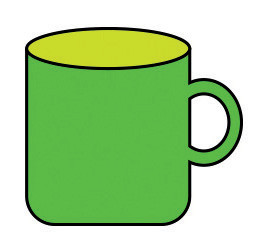
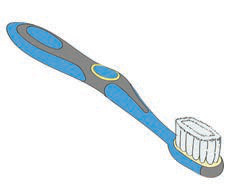

Ninatamka sauti ya herufi m/ Ninabainisha kwa kutumia lugha ya alama herufi m.
Hii ni picha ya nini?
1.
Tamka sauti ya mwanzo ya neno ulilotaja/ bainisha kwa kutumia lugha ya alama herufi ya mwanzo ya neno hilo.
2.
Taja maneno mengine yanayoanza na sauti hiyo/ bainisha kwa lugha ya alama maneno mengine yanayoanza na herufi hiyo.
Taja majina ya picha hizi/ Bainishia kwa kutumia lugha ya alama majina ya picha hizi:


1.
Majina yapi yana herufi za mwanzo zinazofanana?
2.
Jina lipi lina herufi ya mwanzo isiyofanana na nyingine?